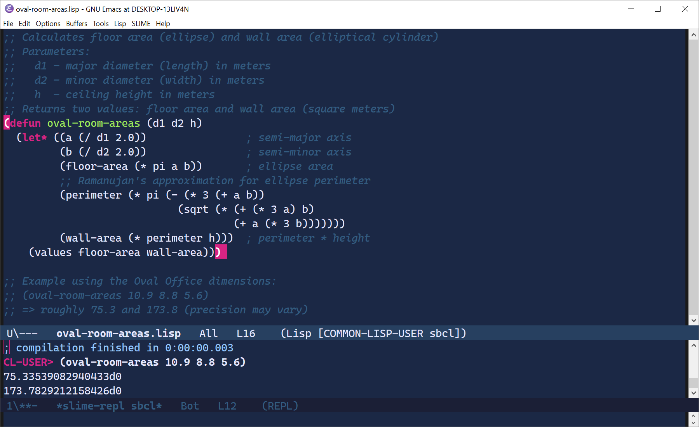

Emacs 30.2 + SBCL 2.6.0 + SLIME 2.32 + Quicklisp
Fully offline, USB-ready, no installation required.
cl-ppcre, bordeaux-threads, local-timerun-emacs.exe (no console window)Distributed under the terms of the GNU GPLv3+.